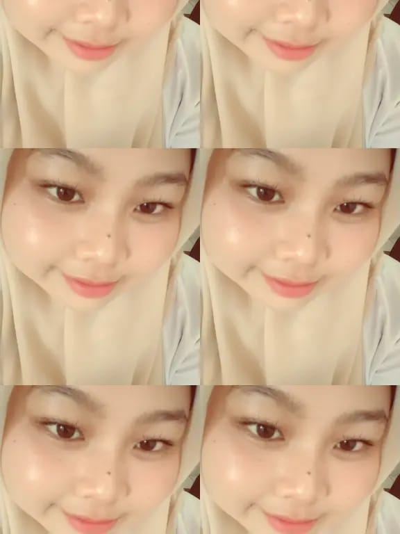

Foto Profil

📝
Tentang Saya
Hola! Perkenalkan saya Ochi. Saya kelahiran 10 Februari 2004. Saat ini saya Mahasiswa
jurusan Sistem Informasi di Universitas Muhammadiyah Sumatera Utara.
Saya memiliki ketertarikan dalam bidang teknologi,
terutama web development dan Pengembangan Sistem Informasi.
📋
Data Pribadi
- Nama Lengkap: Zhulpi Annisa Pasha
- Tempat, Tanggal Lahir: Medan, 10 Februari 2004
- Alamat: Jl. Muchtar basri No. 49,
- Status: Belum Menikah
- Agama: Islam
- Kewarganegaraan: Indonesia
🎨
Hobi & Minat
- Memasak
- Membaca buku
- Mengenal hal baru
- Menonton film dan series
🎓
Riwayat Pendidikan
-
MIN Pekan Bahorok (2015)
Lulus dengan nilai rata-rata 8.5
-
SMP N1 Bahorok (2018)
Lulus dengan nilai rata-rata 8.5
-
SMA N1 Bahorok (2021)
Jurusan IPS, lulus dengan nilai rata-rata 8.7
-
Universitas Muhammadiyah Sumatera Utara (2024 - Sekarang)
💻
Keterampilan
- Programming Languages: Python
- Database: MySQL
- Tools: Git, VS Code, Linux
- Languages: Indonesia (Native), English (Advanced)
💼
Pengalaman Kerja
⏰ Jadwal Harian
| Waktu |
Kegiatan |
| 04:30 |
Bangun, Mandi, shalat, |
| 07:30 |
Kuliah |
| 17:00 |
Olahraga |
| 21:00 |
Istirahat |
📞
Kontak Saya